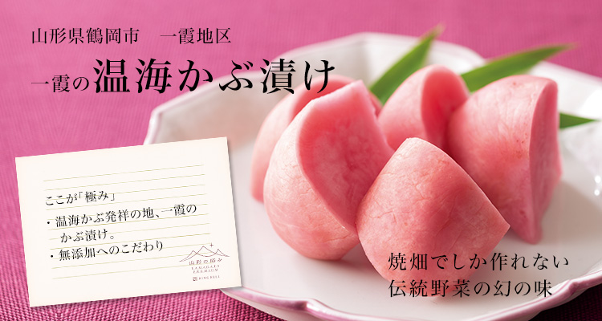
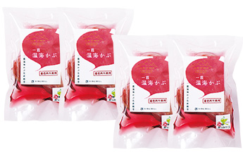
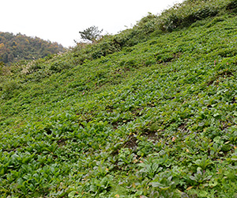
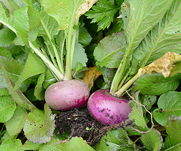
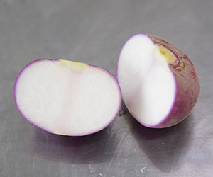
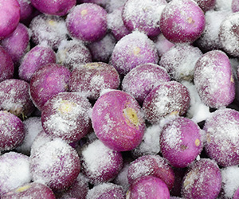
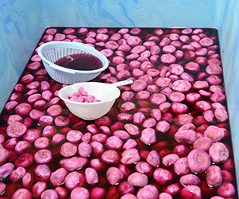
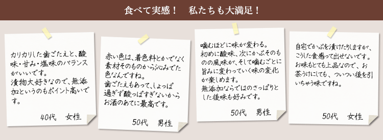
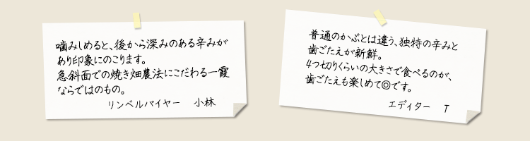

きれいな空気と水、豊かな土壌が育くんだ土地ごとの伝統野菜を、冬でも美味しく食べられるように、昔から創意工夫が積み重ねられ、多様な漬物文化が形作られたことから、「西の京都・東の山形」といわれる漬物王国・山形。
パリッとした歯ごたえ、甘酢のさわやかな酸味、そしてかすかな辛みがクセになる「一霞の温海かぶ漬け」は、その山形の漬物文化が生んだ隠れた逸品です。鶴岡市温海地域、それも一霞地区界隈でしか作れないこと、栽培から加工までとても手間がかかることから、その生産量は限られ、これまでは、ほぼ山形県内の贈答品やお正月などでしか食すことができない、いわば幻の味でした。
今回リンベルでは、栽培から漬け込みまでの全てをこだわりの手作業で行い、今もその伝統の味わいを守り続ける、一霞の生産組合が作る100％無添加の色鮮やかな「一霞の温海かぶ漬け」を「山形の極み」として、特別に販売いたします。
生産量が少ない希少な品のため、期間限定の承りとなりますので、この機会にぜひお求めください。
※完売の際は受注期間中でも販売終了とさせていただきますこと、あらかじめご了承ください。
-

一霞の温海かぶ漬け
- 農薬をほとんど必要としない焼き畑農法へのこだわり
-



「一霞の温海かぶ」の独特の味わいを生み出しているのは、この土地ならではの、現代では珍しくなった焼畑による自然農法です。
温海かぶは、水はけがよい、30度にもおよぶ急斜面という特殊な環境が栽培に向いていることから、一霞では、主に伐採された山林の跡地が使われます。
毎年7月の中旬を過ぎる頃、一霞の温海かぶの栽培は始まります。長い年月が育てた森林では、樹木を伐採した後、堆積した腐葉土に雑草が生い茂っていますが、まずは、今年の耕作を行う場所を選んで、この雑草などを切り払い、そのまま天日干しにします。
刈った草々はよく乾燥させ、8月の下旬頃、翌日、または翌々日に雨が降りそうな日を見計らい、畑の風下からじっくりと火入れを行います。この焼畑により、農地の雑草、害虫、病原体の防除と、焼土による土壌の改良が行われるため、一霞の温海かぶ栽培には農薬を使う必要がほとんどありません。
その後、まだ土に温かさが残っているうちに、種まきを行います。土に残る温もりが眠っているかぶの種への刺激となり発芽性が高まるのです。
収穫は10月から雪が降り出す頃まで。収穫を終えた畑では、翌年の春には自然と山菜などが芽吹くようになります。 その土地を、そのまま４～５年休ませた後、新たな樹木の苗木を植えることで、 その場所が数十年後に再び立派な森林へと成長するのです。
これがこの温海一霞の地で、長年引き継がれてきた焼畑農業のありかたです。
焼畑は環境破壊型の農業ととらえられることがありますが、この温海一霞の山では、一年ごとに焼畑を行う作付エリアを変更することで、山の手入れと農地の獲得を恒久的に行ってきました。そのため、現代まで伝統的な焼畑農業が受け継がれている、日本でも珍しい場所でもあります。
温海かぶ自体は、一霞以外の温海エリアでも栽培されていますが、独自の辛みを持つ漬けあがりとなるのは、急斜面での伝統的な焼畑農業で作られる希少な伝統野菜「一霞の温海かぶ」だけの特徴です。今回は、その一霞で収穫され、一霞で漬けられた無添加の「温海かぶ漬け」だけにこだわり、「極み」の逸品としてお届けいたします。
- 味わいを高める無添加とひと手間へのこだわり
-


元々、温海かぶ漬けは、温海地区のそれぞれの家庭で、古くは味噌と塩、渋柿に漬けた「あば漬け」という形で食されていました。今回ご提供する「極み」の温海かぶ漬けのような甘酢漬けとして漬けられるようになったのは、およそ30年前からといわれています。自家製の甘酢漬けは、洗った温海かぶをそのまま酢と砂糖で漬けるだけの方法が主流で、水っぽく、さっぱりしたものだそうです。
この「極み」の一霞の温海かぶ漬けは、伝統の焼畑農法で作られた、温海かぶそのものの味わいを最大限に引き出すため、素材以外では塩・砂糖・酢しか使わない、無添加にこだわっています。
そのために加えているのが、洗ったかぶを塩漬けにする、ひと手間です。簡単な作業のようですが、大きな箱に漬け込んだ大量のかぶが、均等に塩に浸かるよう、様子を見ながら手作業でかき混ぜる、二晩掛かりの仕事です。これにより、生のかぶからアクと水分を抜き、かぶの旨みをギュッと凝縮していくのです。
その後、塩水をよく切り、酢と砂糖に漬け込みます。寒さの厳しい山間の作業場での漬けこみは４～５℃のなかで行われますが、ほんのわずかな温度の違いで漬かりが変わってくるため、目と舌で漬かり具合を確かめながら完成を待ちます。
この漬け込みはおよそ2週間。じっくりと寝かすことで、生にはなかった独特の辛みが生まれるとともに、純白だった果肉に外皮の色素が沁み込み、塩・酢・砂糖以外は使わない、一霞の温海かぶそのものの優しい味わいをしっかり残した、パリッとした食感の美しい無添加の甘酢漬けとして仕上がります。

料理研究家やグルメライターも絶賛！
「美食のスペシャリスト」の方々からも
お褒めの言葉をいただいています！

-
一霞の温海かぶ漬け
